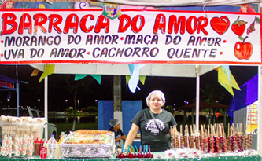
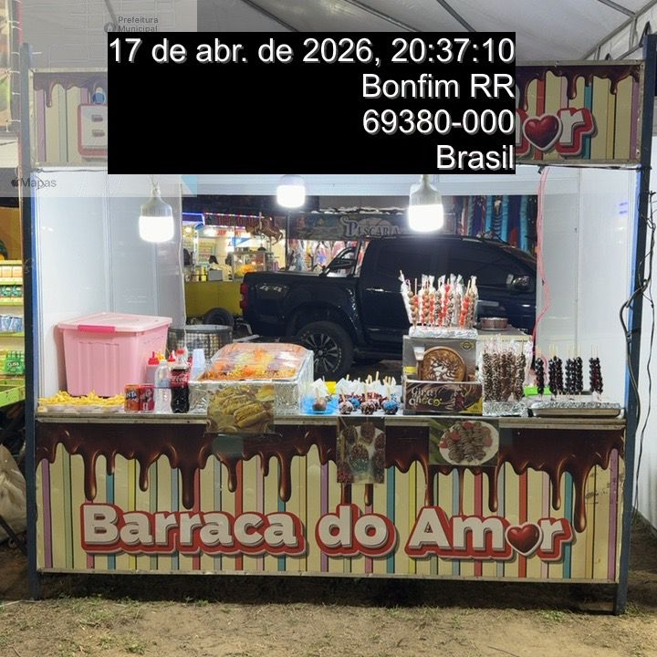
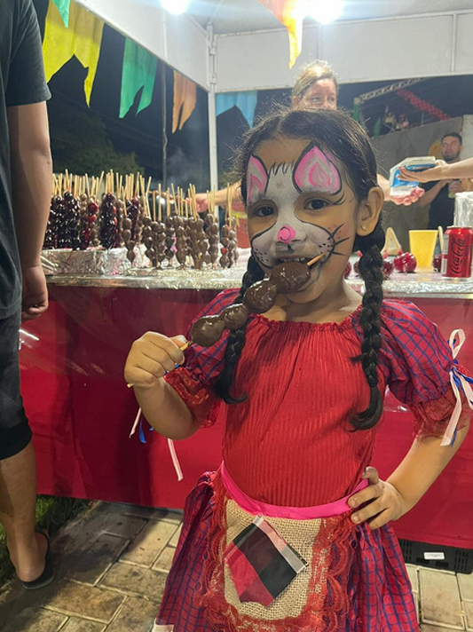
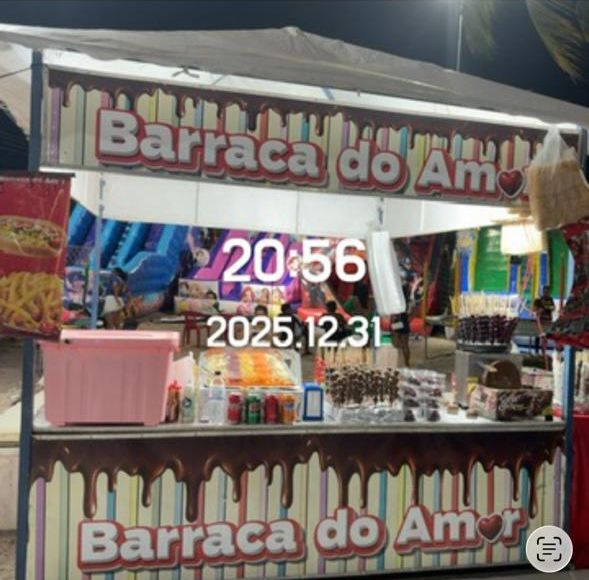
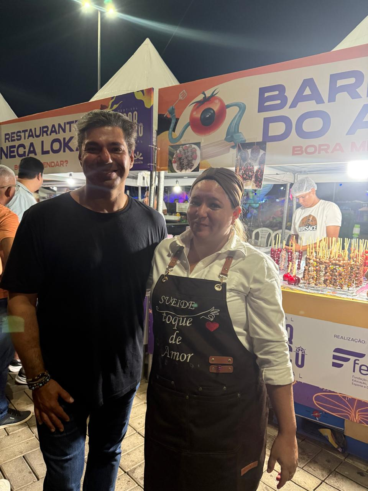
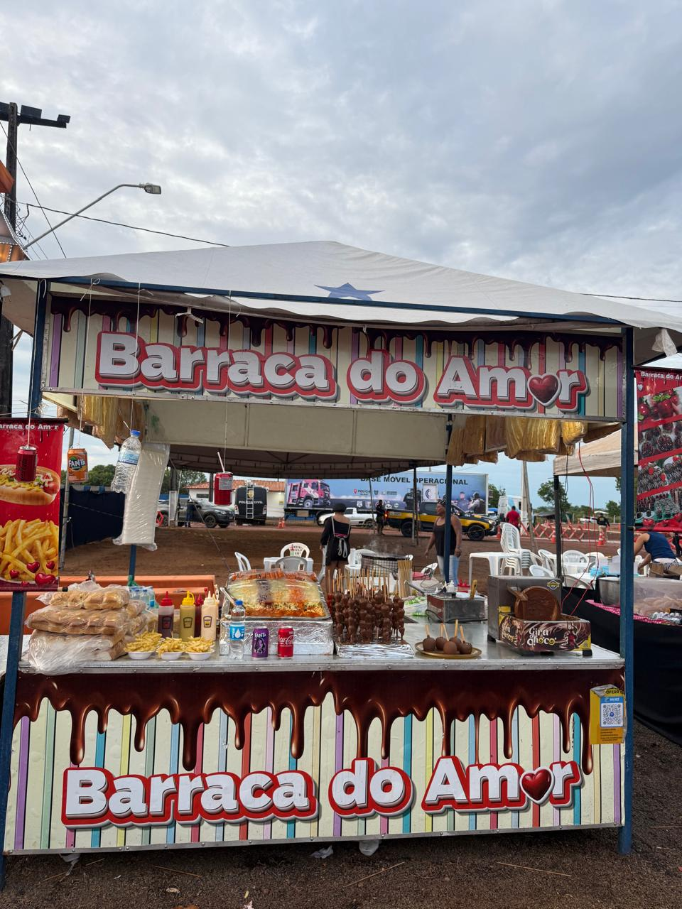
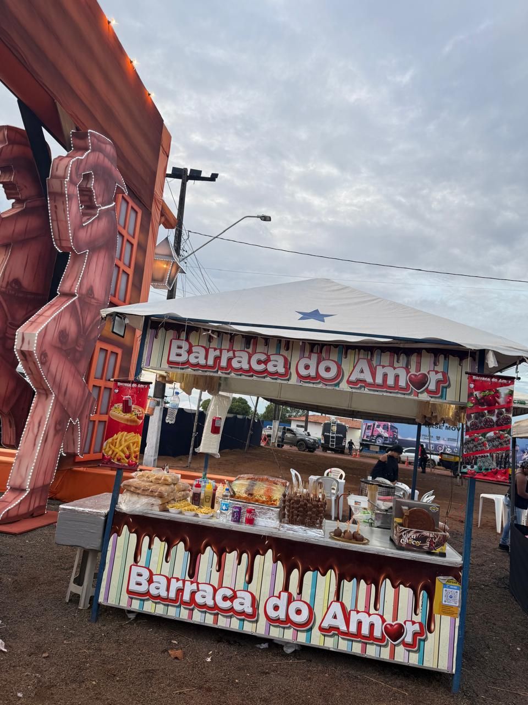
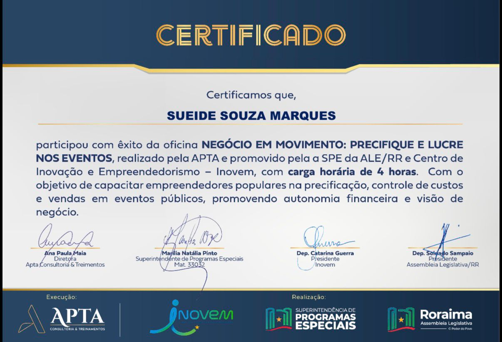
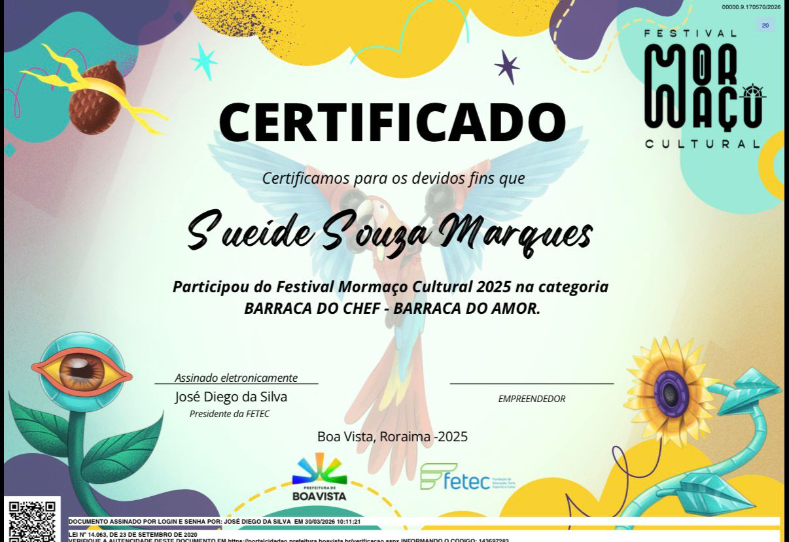
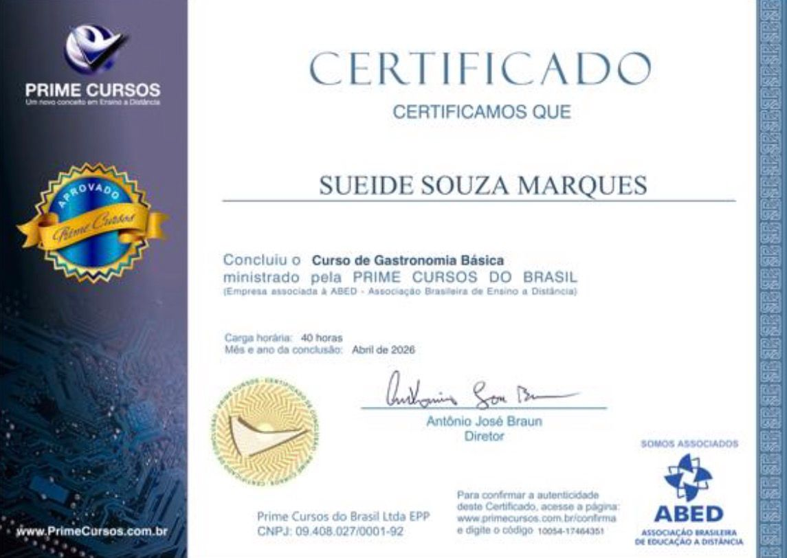

Morango do Amor
Morango selecionado com calda brilhante e crocante.
Doces artesanais, eventos e momentos especiais feitos com carinho.
A trajetória de Sueide Souza Marques com o mundo dos doces começou há muitos anos, quando seus pais vendiam maçã do amor como forma de sustento para a família.
Esse exemplo ensinou Sueide o valor do trabalho e do empreendedorismo. Durante um período, ela seguiu por outro caminho e atuou no ramo de brinquedos infantis.
Mas, em 2025, decidiu voltar às raízes e revisitar essa lembrança doce da infância. Foi assim que surgiu a Barraca do Amor.
O lançamento aconteceu durante o Boa Vista Junina 2025, encantando o público e viralizando nas redes sociais. Desde então, Sueide tem recebido um retorno maravilhoso, o qual define como uma verdadeira bênção de Deus.
 Foto: São João do Anauá - 24 de julho de 2025
Foto: São João do Anauá - 24 de julho de 2025
Morango selecionado com calda brilhante e crocante.
Opções com chocolate, confeitos e acabamento artesanal.
Barraca preparada para festas, feiras, festivais e comemorações.







Clique para abrir e visualizar cada reportagem.
Barraca do Amor.
Abrir ReportagensOficina de precificação, custos e vendas em eventos.
Abrir Reportagens


📍 Boa Vista - Roraima
📞 WhatsApp: (95) 98404-4741
📷 Instagram: @marques.sueide
✉️ sueidepescaria@gmail.com